Omics QC
Last updated on 2026-07-16 | Edit this page
Overview
Questions
- How do I determine if an omics data set is of good quality?
- How do I identify samples that may have technical issues?
Objectives
- Read in transcript and protein data and format it for analysis.
- Transform and standardize data to perform principal component analysis (PCA).
- Interpret a PCA plot to identify potential outlier samples.
*-omics QC
Most *-omics data is derived from raw measurements which are heavily processed to produce a matrix of measurements with features (i.e. transcripts, proteins, metabolites, etc.) in rows and samples in columns. Each technology has its own set of best practices for quality control and normalization. In this lesson, we will be working with processed data, which has gone through these procedures.
R
suppressPackageStartupMessages(library(tidyverse))
suppressPackageStartupMessages(library(ggrepel))
suppressPackageStartupMessages(library(pcaMethods))
Sample Metadata
First, we will read in the sample metadata file. A metadata file contains information about the data, for example, the sex, age, and type of sample. In this case, we will extract the sex and treatment groups for the rats.
R
meta = read_csv(meta_file, col_types = 'cccccc')
What are the dimensions of the metadata?
R
dim(meta)
OUTPUT
[1] 6156 6Next, we will look at the first few rows of the sample metadata.
R
head(meta)
OUTPUT
# A tibble: 6 × 6
pid bid viallabel sex age grp
<chr> <chr> <chr> <chr> <chr> <chr>
1 10023259 90217 90217013001 male 1 8wk_ctrl
2 10023259 90217 90217013104 male 1 8wk_ctrl
3 10023259 90217 90217013105 male 1 8wk_ctrl
4 10023259 90217 90217013106 male 1 8wk_ctrl
5 10023259 90217 90217013107 male 1 8wk_ctrl
6 10023259 90217 90217013108 male 1 8wk_ctrlThere are several columns with cryptic numbers in them. The
pid column is a unique number for each rat. The
bid column is unique numeric value for a batch of rats in a
cohort. The viallabel column is a unique number for a
sample vial. The sex, age, and grp columns contain other information
about each rat.
How many rats do we have in each group?
R
meta |>
select(pid, sex, age, grp) |>
distinct() |>
count(sex, age, grp) |>
pivot_wider(names_from = sex, values_from = n)
OUTPUT
# A tibble: 5 × 4
age grp female male
<chr> <chr> <int> <int>
1 1 1wk 15 15
2 1 2wk 15 15
3 1 4wk 18 18
4 1 8wk_ctrl 12 12
5 1 8wk_trng 14 13There are about 15 rats per treatment group. Also, it appears that we only have data for the 6 month old rats, so we will not use age as a factor in our analysis.
Transcript Matrix
We have reformatted some of the MoTrPAC transcript files to make them easier to read in for this tutorial. We have converted them to numeric matrices and saved them in \[RDS\](https://www.rdocumentation.org/packages/base/versions/3.6.2/topics/readRDS) format. RDS is a binary, compressed format for storing R objects.
R
tissue = 'kidney'
i = str_detect(rna_files, tissue)
rna = readRDS(rna_files[i])
What are the dimensions of the RNA matrix?
R
dim(rna)
OUTPUT
[1] 15981 50The data has about 16,000 rows and 50 columns. Let’s look at the top of the file.
R
rna[1:5,1:5]
OUTPUT
90217015902 90218015902 90222015902 90223015902 90225015902
ENSRNOG00000000012 -1.25005 -1.33353 -0.98970 -0.66202 0.40944
ENSRNOG00000000017 2.73095 2.80670 3.06532 3.14039 2.71366
ENSRNOG00000000021 3.63803 3.85895 3.67937 3.66677 3.75723
ENSRNOG00000000024 2.77459 2.44771 2.61562 2.48395 2.91182
ENSRNOG00000000033 2.13625 2.76537 2.67416 2.78849 2.46297From the top of the RNA file, you can see that genes are in rows. The
rownames which look like ENSRNOG00000000012 are Ensembl rat
gene IDs. The columns contain the samples. This is a traditional omics
data format which is transposed from the traditional statistics table
format in which samples are in rows and observations are in columns.
Challenge 1: What kind of data is in the
rna object?
Click on the rna data object in the Environment tab on
the right side of your screen. Look at the numbers in the data matrix.
Do we have RNASeq counts? Make a histogram of the data to look at it’s
distribution. Then make a boxplot of the RNA data. How do you think that
the data has been transformed and processed?
The data is NOT RNASeq counts because it does not contain integers. It has gone through some type of processing or normalization. Since all of the columns sum to about the same value and the data ranges between -3 and 16, it has probably been log-transformed and library-size adjusted.
R
hist(rna)
boxplot(rna)
Next, let’s check whether we have any missing data. We will do this by summing the number of elements in the data matrix that are NA.
R
sum(is.na(rna))
OUTPUT
[1] 0Since the sum of NA values is 0, we have no missing data.
Next, we will get the sample metadata for the cortex samples. We will filter the larger sample metadata file and align the sample IDs between the metadata and the transcript data.
R
meta_rna = meta[match(colnames(rna), meta$viallabel),]
all(colnames(rna) == meta_rna$viallabel)
OUTPUT
[1] TRUENow that we have meaningful group identifiers for each sample, we
will calculate the principal components of
the expression counts. R has several functions which calculate principal
components, but we will use the pcaMethods package. There
are many different methods to compute the principal components in the
pcaMethods package. You can use the
listPcaMethods() function to list all of them. Here, we
will used the svd method, which uses singular value decomposition to calculate the
principal components. We will also standardize the columns to make the
mean equal to zero and the standard deviation equal to one.
R
pca_rna = pcaMethods::pca(object = rna,
nPcs = 10,
method = 'svd',
scale = 'uv')
Let’s look at the PCA summary.
R
summary(pca_rna)
OUTPUT
svd calculated PCA
Importance of component(s):
PC1 PC2 PC3 PC4 PC5 PC6 PC7 PC8
R2 0.9738 0.00653 0.0020 0.00109 0.00066 0.0006 0.00056 0.00056
Cumulative R2 0.9738 0.98031 0.9823 0.98340 0.98406 0.9847 0.98522 0.98578
PC9 PC10
R2 0.00052 0.0005
Cumulative R2 0.98630 0.9868From the summary of the PCA, we can see that PC1 accounts for the overwhelming majority of the variance. This is a large amount of variance for the first PC to explain and it may indicate something unusual about the data.
Let’s get the principal components from the PCA object. This is
stored in the loadings slot.
R
ldngs = data.frame(loadings(pca_rna)) |>
rownames_to_column('viallabel') |>
left_join(meta_rna, by = 'viallabel')
Then we will plot the first two principal components, colored and shaped by sex and experimental group.
R
ldngs |>
ggplot(aes(PC1, PC2, color = sex, shape = grp)) +
geom_point(size = 5) +
labs(title = str_c('PCA of ', tissue, ' Expression'),
x = str_c('PC1 (', round(pca_rna@R2[1] * 100), '%)'),
y = str_c('PC2 (', round(pca_rna@R2[2] * 100), '%)')) +
theme(text = element_text(size = 18))
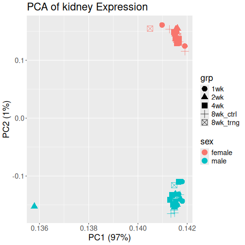
The plot above shows PC1 on the X-axis and PC2 on the Y-axis. Each point represents one rat’s kidney expression value and is colored by sex and shaped by experimental group. Note that PC1 accounts for 97% of the variance, which is high.
Challenge 2: What do you think about this plot?
Look at the PCA plot. What differences do you see between the sex and treatment groups? Are there any odd points?
The data separate by sex on the PC2 axis. At this resolution, there are not large differences between treatment groups. There is one point, a male in the 2 week group, which is far from the other points on the PC1 axis.
What should we do about the outlier data point? Why might one sample be far from the others? Is it a real data point that should be left in the data set? Should we remove it? How can we start looking into whether this is a data point that we should ask the investigators about?
First, let’s get the sample ID for the outlier sample.
R
outlier = ldngs |>
filter(PC1 < 0.136)
Then, let’s add the vial label to the plot.
R
ldngs |>
ggplot(aes(PC1, PC2, color = sex, shape = grp)) +
geom_point(size = 5) +
geom_label_repel(data = outlier, aes(PC1, PC2, label = viallabel)) +
labs(title = str_c('PCA of ', tissue, ' Expression'),
x = str_c('PC1 (', round(pca_rna@R2[1] * 100), '%)'),
y = str_c('PC2 (', round(pca_rna@R2[2] * 100), '%)')) +
theme(text = element_text(size = 18))
Do we have any other data that we could use to figure out whether the kidney data is “good” or not? Perhaps the rat has kidney disease and really is quite different from the other rats. Or perhaps the rat has an infection. We can’t remove this data point on our own, but we can gather evidence to present to the investigator to make a decision.
We have transcript data in other tissues and protein data in the same tissues. What if we look at the other data and see if the same rat is an outlier in other data sets?
Let’s gather all of the code together to read in the transcript data for one tissue, get the sample metadata, and make a PCA plot.
R
# Get the viallabel for the outlier sample so that we can plot it.
outlier_vial = outlier$viallabel[1]
# Get the index of the RNA file for the current tissue.
i = str_detect(rna_files, tissue)
# Get the tissue.
tissue = str_replace_all(basename(rna_files[i]), '_rna_log_norm_cpm\\.rds$', '')
# Read in the transcript data.
rna = readRDS(rna_files[i])
# Get the sample metadata.
meta_rna = meta[match(colnames(rna), meta$viallabel),]
# Perform PCA.
pca_rna = pcaMethods::pca(object = rna,
nPcs = 10,
method = 'svd',
scale = 'uv')
# Get the loadings from the PCA.
ldngs = data.frame(loadings(pca_rna)) |>
rownames_to_column('viallabel') |>
left_join(meta_rna, by = 'viallabel')
# Plot PC1 & PC2.
p = ldngs |>
ggplot(aes(PC1, PC2, color = sex, shape = grp)) +
geom_point(size = 5) +
geom_label_repel(data = outlier, aes(PC1, PC2, label = viallabel)) +
labs(title = str_c('PCA of ', tissue, ' Expression'),
x = str_c('PC1 (', round(pca_rna@R2[1] * 100), '%)'),
y = str_c('PC2 (', round(pca_rna@R2[2] * 100), '%)')) +
theme(text = element_text(size = 18))
print(p)
Transcript PCA Plots
R
# Get the pid for the outlier sample so that we can plot it.
outlier_pid = outlier$pid[1]
for(i in seq_along(rna_files)) {
# Get the tissue.
tissue = str_replace_all(basename(rna_files[i]), '_rna_log_norm_cpm\\.rds$', '')
# Read in the transcript data.
rna = readRDS(rna_files[i])
# Get the sample metadata.
meta_rna = meta[match(colnames(rna), meta$viallabel),]
# Perform PCA.
pca_rna = pcaMethods::pca(object = rna,
nPcs = 10,
method = 'svd',
scale = 'uv')
# Get the loadings.
ldngs = data.frame(loadings(pca_rna)) |>
rownames_to_column('viallabel') |>
left_join(meta_rna, by = 'viallabel')
# Get the outlier sample in this data set.
outlier = ldngs |>
filter(pid == outlier_pid)
# Plot PC1 & PC2.
p = ldngs |>
ggplot(aes(PC1, PC2, color = sex, shape = grp)) +
geom_point(size = 5) +
geom_label_repel(data = outlier, aes(PC1, PC2, label = viallabel)) +
labs(title = str_c('PCA of ', tissue, ' Expression'),
x = str_c('PC1 (', round(pca_rna@R2[1] * 100), '%)'),
y = str_c('PC2 (', round(pca_rna@R2[2] * 100), '%)')) +
theme(text = element_text(size = 18))
print(p)
} # for(i)
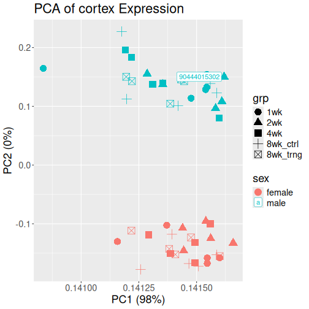
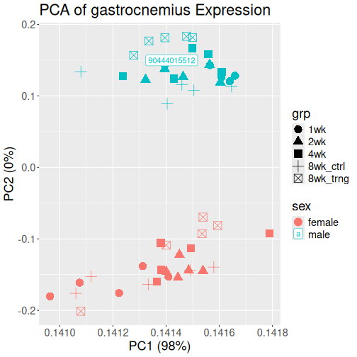
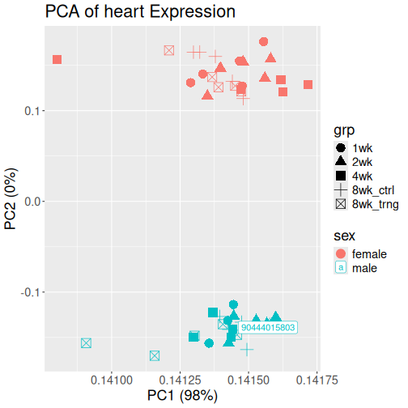
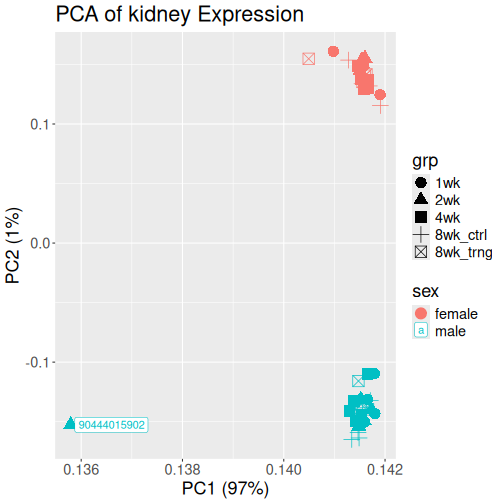
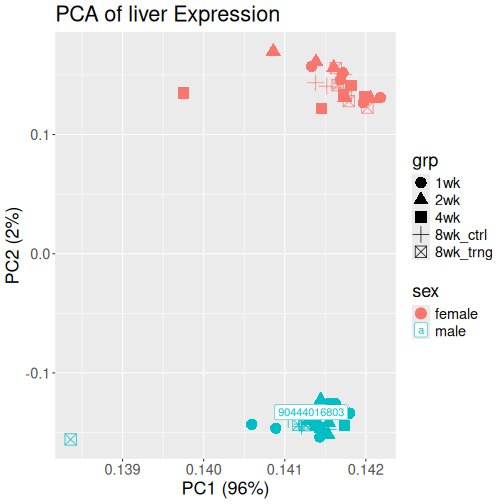
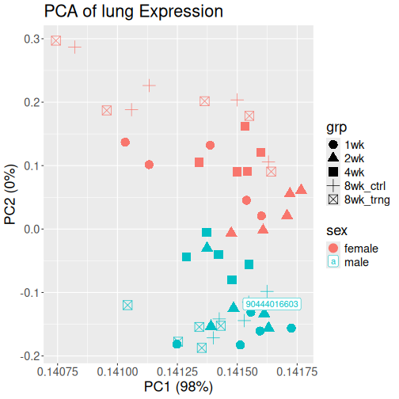
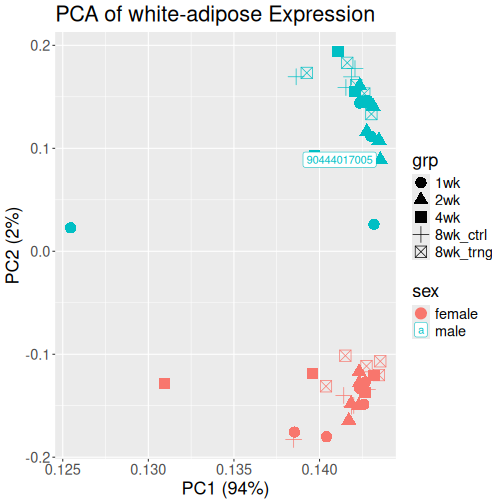
Protein PCA Plots
R
# Get the pid for the outlier sample so that we can plot it.
outlier_pid = outlier$pid[1]
for(i in seq_along(prot_files)) {
# Get the tissue.
tissue = str_replace_all(basename(prot_files[i]), '_prot_norm_lr\\.rds$', '')
# Read in the protein data.
prot = readRDS(prot_files[i])
# Get the sample metadata.
meta_prot = meta[match(colnames(prot), meta$viallabel),]
# Perform PCA.
pca_prot = pcaMethods::pca(object = prot,
nPcs = 10,
method = 'nipals',
scale = 'uv')
# Get the loadings.
ldngs = data.frame(loadings(pca_prot)) |>
rownames_to_column('viallabel') |>
left_join(meta_prot, by = 'viallabel')
# Get the outlier sample in this data set.
outlier = ldngs |>
filter(pid == outlier_pid)
# Plot PC1 & PC2.
p = ldngs |>
ggplot(aes(PC1, PC2, color = sex, shape = grp)) +
geom_point(size = 5) +
geom_label_repel(data = outlier, aes(PC1, PC2, label = viallabel)) +
labs(title = str_c(tissue, ' Protein'),
x = str_c('PC1 (', round(pca_rna@R2[1] * 100), '%)'),
y = str_c('PC2 (', round(pca_rna@R2[2] * 100), '%)')) +
theme(text = element_text(size = 18))
print(p)
} # for(i)
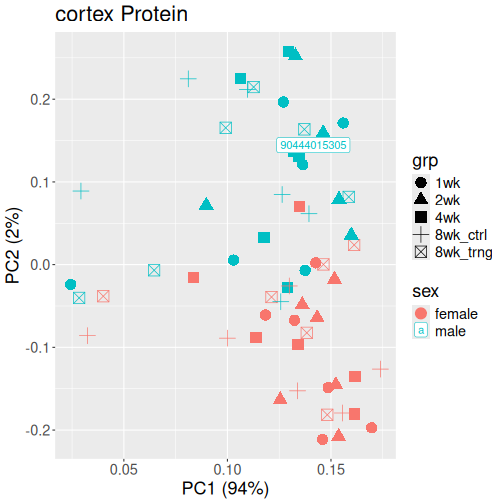
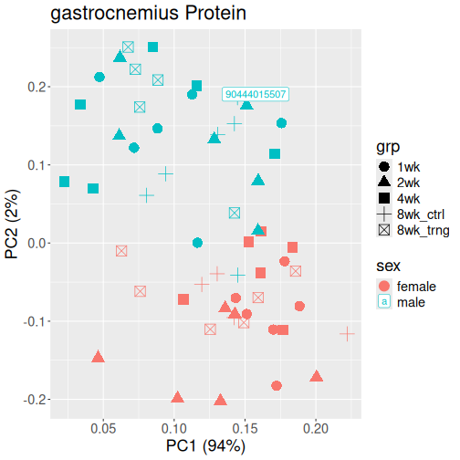
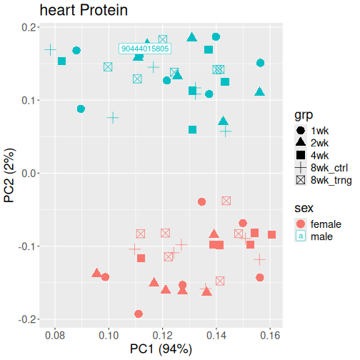
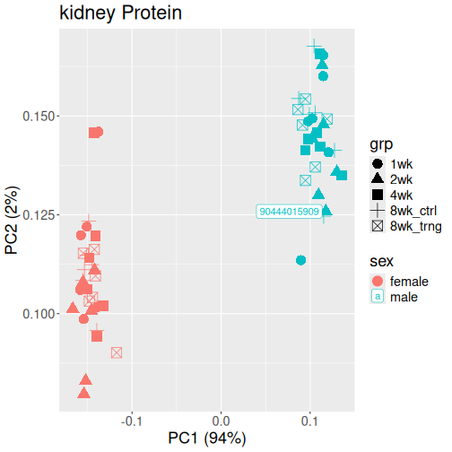
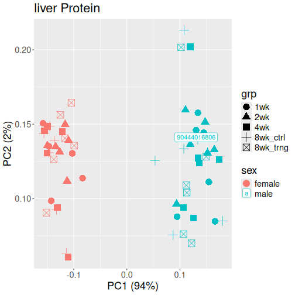
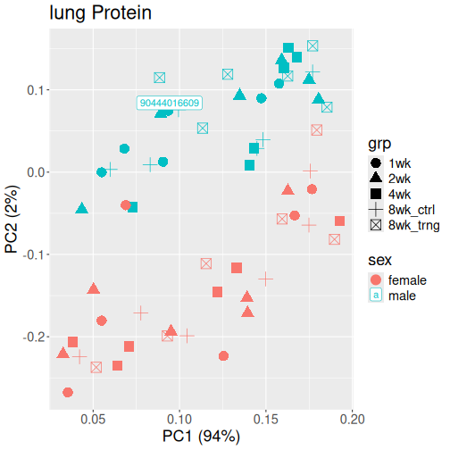
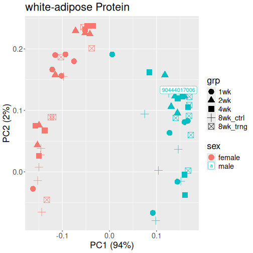
- Omics data are so large that they need to be summarized concisely.
- Principal component analysis is a linear dimensionality reduction method which allows omics data to be visualized.
- PCA plots can be quick and effective ways to identify trouble in omics data before proceeding with analysis.